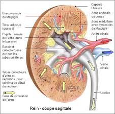

Bienvenue Sur Medical Education
La physiologie de l'appareil urinaire
Les fonctions du rein- Fonction endocrine :
- Secretion de la renine : regulation de la pression arterielle.
- Secretion de l'erythropoeetine.
- Transformation de la vitamine D dans sa forme active.
- Fonction exocrine :
- Production d'urine.
- Elimination des dechets.
- Maintien de la constante du milieu interieur :
- Equilibre hydrique.
- Equilibre hydro-electrolytique.
- Equilibre acido-basique.

La secretion de la renine
Toute diminution de la pression arterielle ou veineuse, entraene une insuffisance de l'irrigation arterielle du rein (ischemie renale), et provoque la secretion par le rein de la renine.
La renine joue un rele dans la regulation de la pression arterielle. Liberee dans le sang circulant, elle reagit avec une substance contenue dans le plasma, l'angiotensinogene, synthetisee par le foie, afin de permettre la secretion de l'angiotensine II.
L'angiotensine II a deux proprietes fondamentales :
- Vasoconstriction : elle augmente donc la pression arterielle.
- Augmente la secretion de l'aldosterone. L'aldosterone est une hormone qui augmente la reabsorption d'eau et de sodium et l'elimination urinaire du potassium.
La secretion de l'erythropoeetine
Le rein produit et libere une substance, l'erythropoeetine. Celle-ci stimule l'elaboration des globules rouges par les organes hematopoeetiques. Sa secretion est declenchee par l'hypoxie.
La transformation de la vitamine D dans sa forme active
La vitamine D subit une transformation en forme active au niveau du rein sous l'action d'une hormone, l' 1-alpha-hydroxylase, secretee par le tube du glomerule. On constate une diminution de la vitamine D, une demineralisation.
La production d'urine
L'urine est un liquide jaune ambre, d'odeur speciale, de reaction en general acide, de densite de 1,020.
Le rein elimine en les concentrant certains elements du sang, cette elimination est selective puisque le rein retient, sans les eliminer, d'autres elements (protides), enfin, le rein a des fonctions de synthese puisque l'urine contient des elements que l'on ne trouve pas dans le sang et qui ne peuvent avoir ete fabriques que par le rein.
La miction
La miction est l'evacuation des urines declenchee par vendange de la vessie.
Le deroulement de la miction normale est sous la dependance du systeme nerveux.
Innervation de la vessie
- Centres vesicaux : peuvent assurer l'autonomie de la vessie.
- Centres medullaires : ferment le sphincter lisse et donc, permet le remplissage et la retention d'urine.
- Centres nerveux cerebraux : permet le declenchement volontaire de la miction.
La continence est la possibilite de retenir ses urines assuree par un double sphincter qui entoure l'uretre posterieur :
- Un sphincter lisse.
- Un sphincter strie soumis a la volonte.
- La filtration glomerulaire.
- La reabsorption tubulaire.
- L'excretion tubulaire.
La filtration glomerulaire est la filtration de sang pendant son passage dans la pelote capillaire du glomerule ce qui produit l'urine primitive ou filtrat glomerulaire.
Le debit urinaire du glomerulaire etant de 180 litres/24h, il existe une reabsorption.
La reabsorption tubulaire
La reabsorption tubulaire est un processus qui vise a reabsorber certains constituants de l'urine primitive faisant passer le volume du filtrat de 180 litres/24h a 1,5 litre/24h.
La reabsorption tubulaire s'effectue selon deux processus :
- Un processus passif, n'exigeant aucun travail cellulaire mais qui depend des pressions et des concentrations.
- Un processus actif impliquant un travail cellulaire sous la dependance de reactions enzymatiques avec un taux maximal de reabsorption.
L'excretion tubulaire est l'excretion de ce qui est etranger e l'organisme par les cellules des tubes. A ceci s'ajoute les ions H+ et les ions ammonium secreter par le metabolisme des cellules des tubes.
L'elimination des dechets
Les dechets solubles de l'organisme (uree, acide urique, creatinine, glucose) sont elimines par le rein qui les concentre.
Le glucose filtre au niveau du glomerule est totalement reabsorbe au niveau du tube proximal a condition que la glycemie ne depasse pas 8,8 mmol/L, la glycosurie depend donc de la glycemie.
L'equilibre hydrique
Le rele du rein dans l'elimination de l'eau est fondamental puisqu'il maintient stable le capital hydrique de l'organisme, que se soit la deshydratation ou l'hypovolemie.
L'elimination de l'eau se fait sous la dependance d'une hormone, l'hormone antidiuretique (ADH) qui agit au niveau du tube contourne distal et du tube collecteur en rendant selectivement les parois permeables a l'eau.
Toute restriction hydrique entraene la secretion de l'ADH, ce qui eleve la permeabilite des parois du tube collecteur, d'oe une resorption accrue d'eau et une diurese reduite.
L'equilibre hydro-electrolytique
Le rein regle l'elimination de toutes les substances minerales et ainsi, maintient constante la composition ionique du plasma.
Le sodium a sa reabsorption contreler par l'aldosterone qui retient le sodium et l'eau en favorisant l'elimination dans l'urine du potassium.
Le potassium filtre est totalement reabsorbe par le tube proximal. Le potassium elimine dans l'urine est secrete par le tube distal oe il est echange ion pour ion avec le sodium. L'aldosterone stimule l'excretion du sodium.
L'equilibre acido-basique
Le metabolisme cellulaire aboutit a la formation continuelle d'acides. Le rele du rein est d'eliminer l'exces d'acides tout en epargnant le capital basique de l'organisme.
Le maintient d'un pH normal est possible grece a trois mecanismes :
- La secretion d'ions H+ acides echanges contre du sodium (ions alcalins).
- La reabsorption des bicarbonates alcalins.
- La secretion d'ions ammoniums permettant
l'elimination des acides forts sous forme de sels d'ammonium.